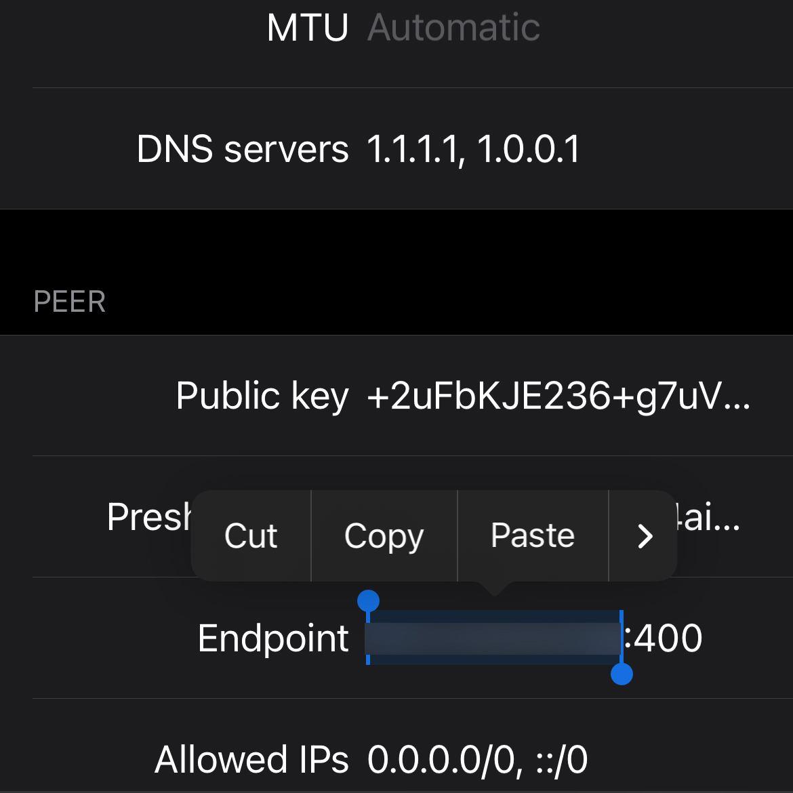

در این حالت ابتدا گزینه + را در گوشه بالا سمت راست برنامه انتخاب کنید و گزینه اسکن QR کد را از منو باز شده انتخاب کنید و کد ارائه شده را اسکن نمایید
پس از اسکن کد نام اشتراک خود را که از پشتیبانی دریافت کرده اید وارد نمایید
حالا کانفیگ شما با موفقیت وارد برنامه شده است و در این مرحله ممکن است برنامه از درخواست شما ه اجازه های لازم جهت وارد کردن کانفیگ به دستگاه شما را بنماید که باید آن ها را تایید کرده و در صورت لازم رمز دستگاه خود را وارد کنید
حالا در صفحه اصلی برنامه با فعال و غیر فعال کردن گزینه نشان داده شده در تصویر پایین می توانید .اشتراک خود را بر حسب نیاز فعال و یا غیر فعال کنید.
تغییر آدرس اتصال یا پورت
در صفحه جدید باز شده گزینه ادیت را از بالا سمت راست انتخاب نمایید.
حالا میتوانید به قسمت اندپوینت Endpoint رفته و آدرس یا پورت جدید را جایگزین موارد فعلی کرده و گزینه سیو یا ذخیره را در بالا سمت راست صفحه انتخاب نمایید.
